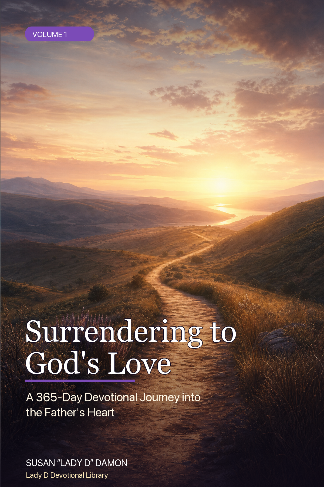

Featured Devotional Collection

Volume 1 · devotional + journal
Surrendering to God’s Love
A 365-Day Devotional Journey into the Father’s Heart
366 entries HTML now PDF proof lane
Open HTML bookPDF proofJournal PDF
Volume 2 · devotional + journal
Walking with Jesus
A 365-Day Devotional Journey of Daily Discipleship
366 entries HTML now PDF proof lane
Open HTML bookPDF proofJournal PDF
Volume 3 · devotional + journal
Filled with the Holy Spirit
A 365-Day Devotional Journey in Spirit-Led Living
366 entries HTML now PDF proof lane
Open HTML bookPDF proofJournal PDF